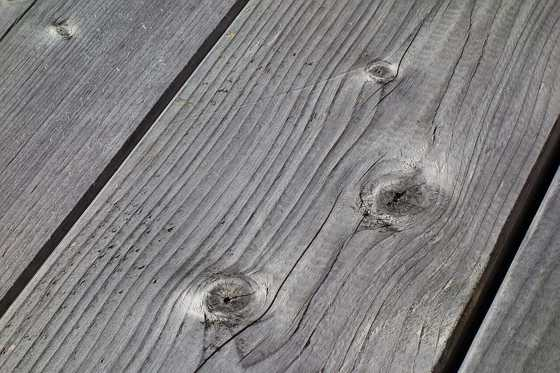
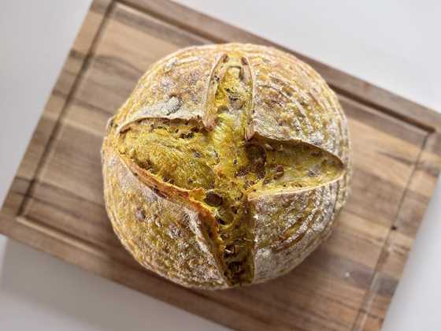
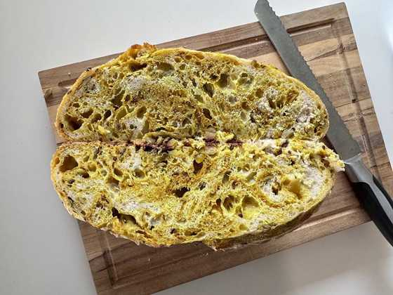
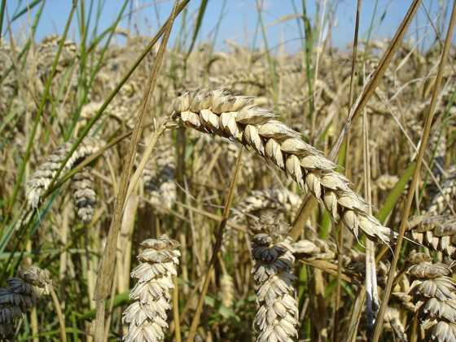
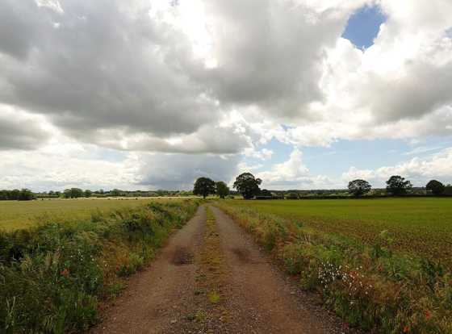
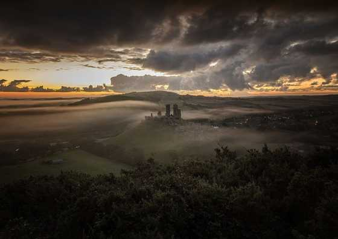

MAD LAND
揚げたての香りと一杯のコーヒーを、手に持って歩き出せる昼どきに。
揚げたての香りと一杯のコーヒーを、手に持って歩き出せる昼どきに。
MAD LAND(マッドランド)は、大分県中津市三光にある「揚げサンドとコーヒーの店」です。Instagramのプロフィールによると、テイクアウトのみの営業で、休みは不定休、日々の情報はInstagramで案内されています。イベントへの出店もされています。
店名の由来や店主の想いは公開情報から確認できなかったため、このページでは触れていません。







揚げたてを袋ごしに感じる温かさが良くて、コーヒーと一緒に外で食べました。イメージ例
お昼前の小さな楽しみになりました。また寄りたいです。イメージ例
持ち帰りで気軽に買えるのがうれしいです。
口コミは制作側が作成したイメージ例であり、実在の声ではありません。



〒871-0101 大分県中津市三光森山627番地
Instagram @mad_land_nakatsu(最新の営業情報はこちら)